Google Summer of Code at Open Robotics
In the summer of 2021, I had the opportunity to work at Open Robotics (née Open Source Robotics Foundation) as a student developer. The project was in turn funded by Google through their Summer of Code 2021 program.
Back in late 2020, I was looking at new open-source projects that I could contribute to, and by good fortune I stumbled upon the Ignition Robotics project. I was already a wee bit familiar with some of the software published by them and by Open Robotics at large - one of them being the Gazebo robotics simulator. I actively started contributing to their project by making small pull requests at first, such as adding an about dialog, light intensity modification, and more. Three months later, I applied to the Summer of Code 2021 program at Open Robotics, and one fine day, after a video meeting and evaluation, I got the acceptance mail!
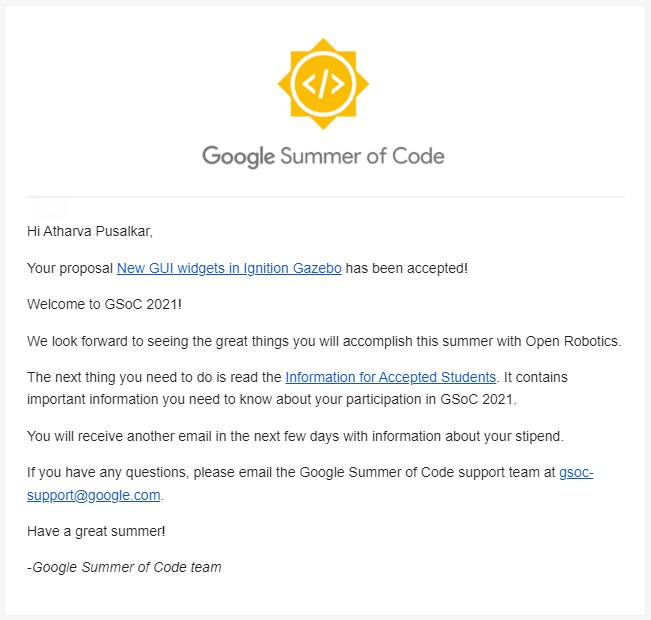
If you want to read the blog post by Open Robotics, visit https://www.openrobotics.org/blog/2021/5/25/google-summer-of-code-202
Watch and hear me talk about the debugging features added to Ignition Gazebo in the Fortress release demo meeting:
The Project
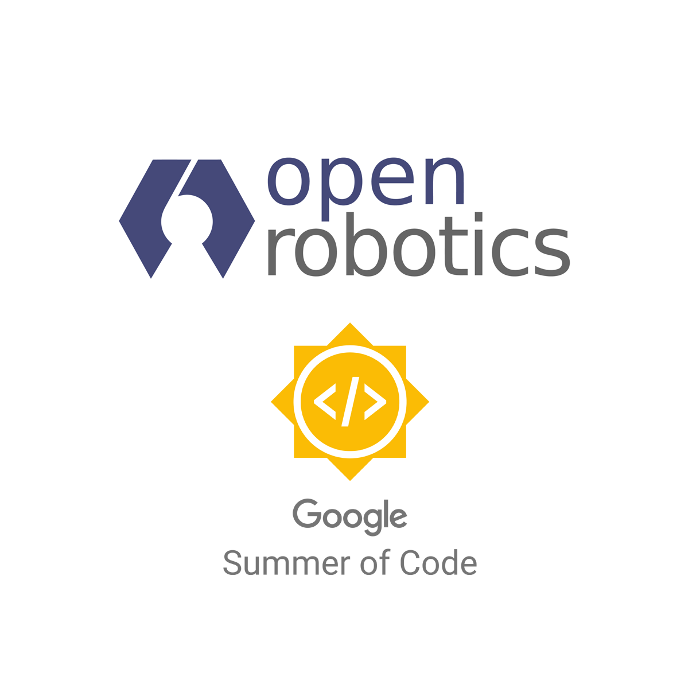
In the past, developing simulations worlds was a trial and error process, and users often had to provide computed values for robot inertia, joints, and mass properties, and hope that they will work in the simulation directly. If the physical behavior of the robot differed from what the user expected, there was no way to visualize what went wrong in the simulation world.
Due to the growing user base of the newer simulator, with it finding its applications in the industry and competitions such as the DARPA SubT challenge, it was becoming imperative to add capabilities to visualize values coming from the physics engine of Gazebo. Hence, this project was undertaken to add new features to visualize the robot inertia, mass, joints, and more at runtime.
Project Breakdown
This project involves working on two Ignition libraries - Gazebo and Rendering. The visual classes are first added to the Rendering library which is then consumed by the downstream Gazebo project. A total of 9 pull requests were made during this project:
Since new visuals are first added to the Ignition Rendering library, this project also extends Ignition Rendering to have a visualization component along with sensors and cameras (Please refer to this video Ignition vs Gazebo Classic + Ignition Rendering: Community Meeting at 20:27 to get an idea about the architecture).
These visualizations primarily target the Ogre 1.9 and Ogre 2.2 render engines as guided by the Ignition Gazebo architecture. That being said, the joint visualization should work for the NVIDIA OptiX raytracing engine as well. Currently, Ubuntu 18.04 and 20.04 along with Windows 10 and above are supported. Support for macOS is not under development due to additional requirements for the Metal API.
Visualize as Wireframe
Users often need to debug their 3D meshes, hence we added a wireframe rendering mode to visuals, similar to Gazebo Classic
Ignition Rendering Pull Request - https://github.com/ignitionrobotics/ign-rendering/pull/314
Ignition Gazebo Pull Request - https://github.com/ignitionrobotics/ign-gazebo/pull/816
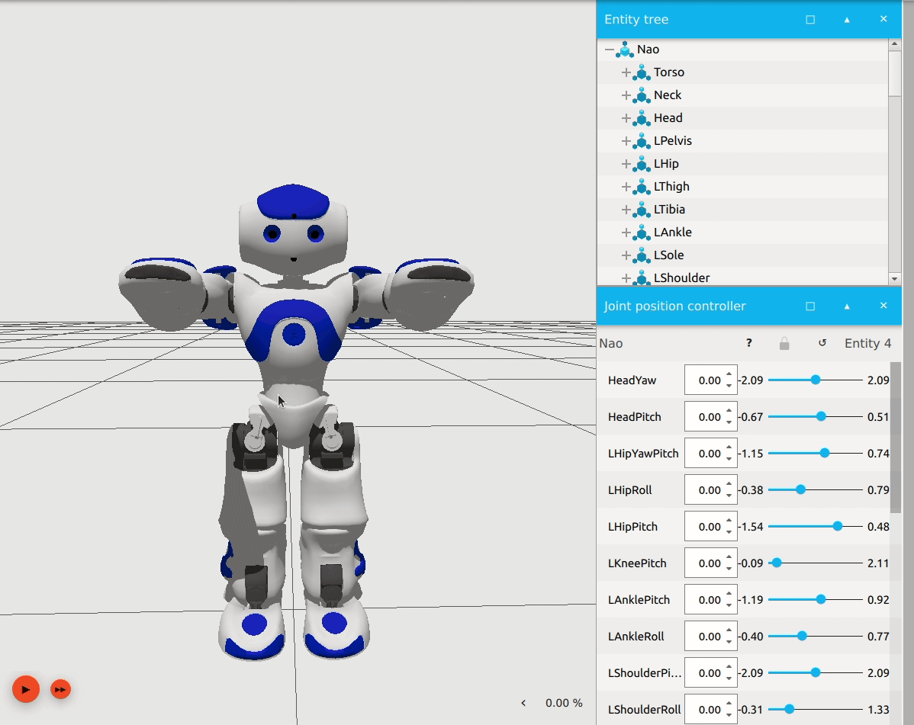
Visualize as Transparent
You can now make a robot model or its link transparent in Gazebo, to help you see its other aspects more clearly.
Ignition Gazebo Pull Request - https://github.com/ignitionrobotics/ign-gazebo/pull/878
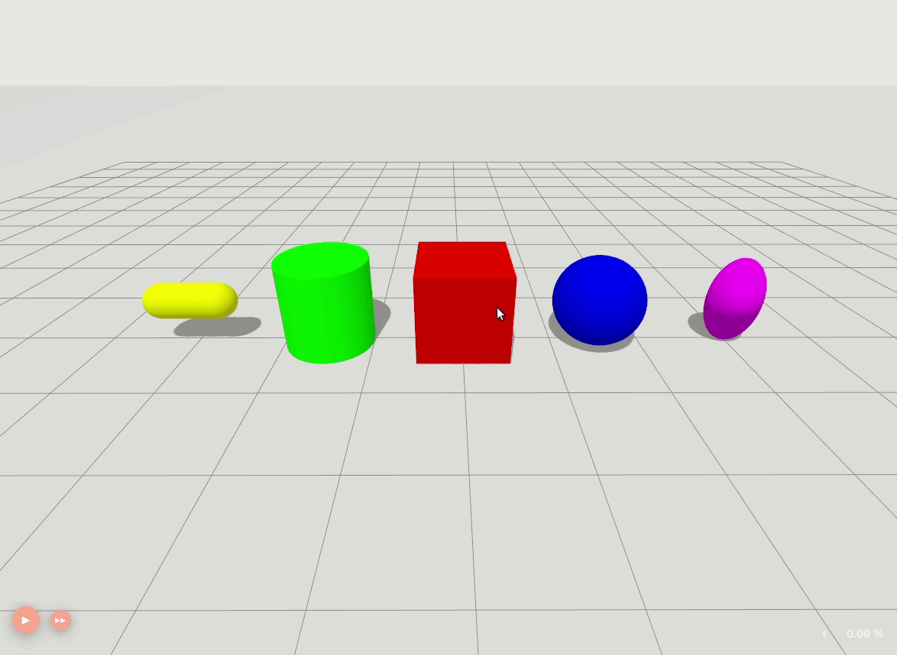
Visualize Inertia
Visualize the inertia of a robot model or link using its physics inertia properties (No more adding values in SDF files blindly).
Ignition Rendering Pull Request - https://github.com/ignitionrobotics/ign-rendering/pull/326
Ignition Gazebo Pull Request - https://github.com/ignitionrobotics/ign-gazebo/pull/861
Ignition Rendering: 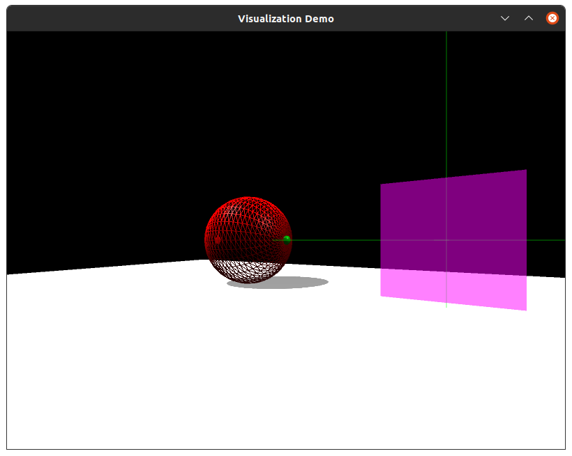
Ignition Gazebo: Here’s the inertia visualization in different scales and orientations: 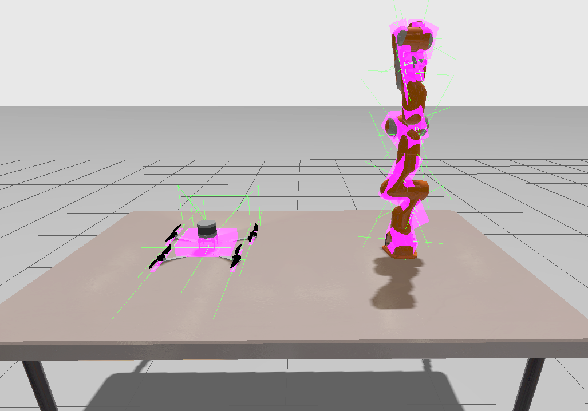
Visualize Center of Mass
Visualize the center of mass of a robot model or link, using the same inertia values.
Ignition Rendering Pull Request - https://github.com/ignitionrobotics/ign-rendering/pull/345
Ignition Gazebo Pull Request - https://github.com/ignitionrobotics/ign-gazebo/pull/903
Ignition Rendering: 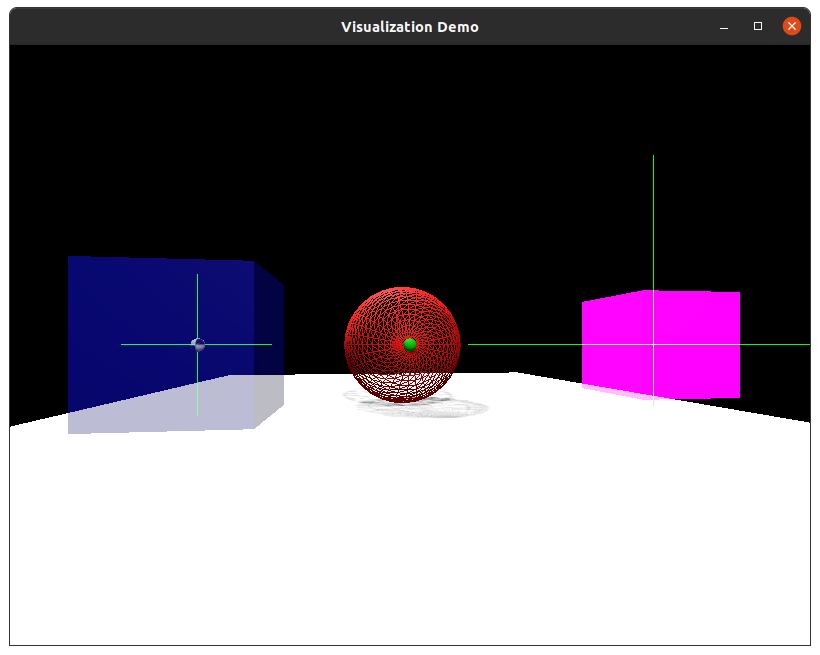
Ignition Gazebo: 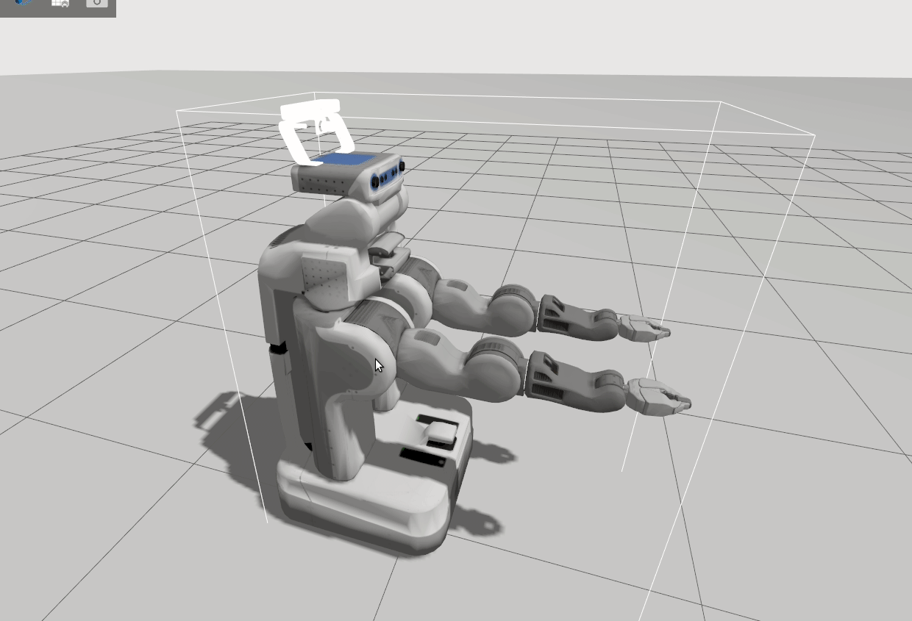
Visualize Joints
You can now visualize the joints of a robot while simulating or building it. Joints such as revolute, prismatic, universal, ball, and more are supported.
This visualization will be extended in the future to planned features such as the model and joint editor.
Ignition Rendering Pull Request - https://github.com/ignitionrobotics/ign-rendering/pull/366
Ignition Gazebo Pull Request - https://github.com/ignitionrobotics/ign-gazebo/pull/961
Ignition Rendering: 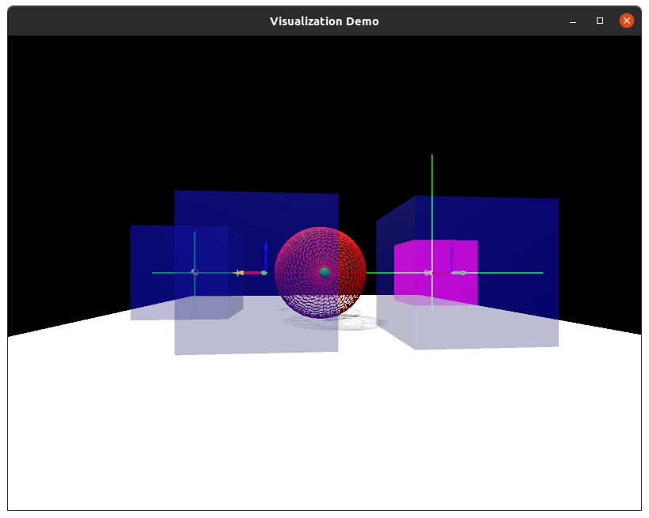
Ignition Gazebo:

Besides the above-mentioned, I have also added features such as the about dialog and light intensity fields during the pre-GSOC period.
We hope that this project will provide a better user experience to existing users and bring more people under the Ignition project by reducing the feature gap between the two simulators.
These new visualizations will be released to the public with Ignition Fortress in September 2021.
Testing
You can test the new features by installing Ignition Fortress from Nightly builds and using the demo world provided in this repository.
After downloading, you can run the simulation by
ign gazebo -v 4 visualization_demo.sdf
Ignition Gazebo demo using a SubT vehicle: 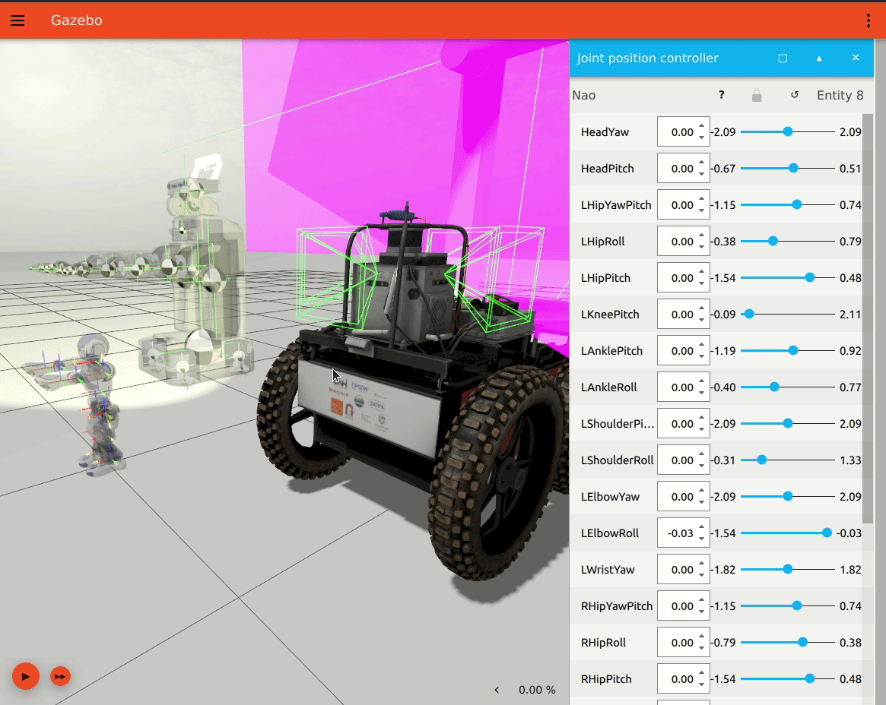
Ignition Rendering demo:
A small demo involving the visualization component of Ignition Rendering is now included with the source code starting with the Fortress release.
As opposed to the Gazebo Classic simulator, the new Ignition libraries offer a decoupled architecture. Each component of Gazebo (For example, rendering, transport and physics) is now a separate library. The advantage is that developers can use the above-mentioned visuals for their own separate projects without having the overhead of unwanted Gazebo code.
Acknowledgments
I thank my mentor, Alejandro Hernández Cordero, for supporting and guiding me during the entire program and before it. Thanks to the whole Open Robotics team for providing me with this opportunity, reviewing my work, and assisting me with the project.
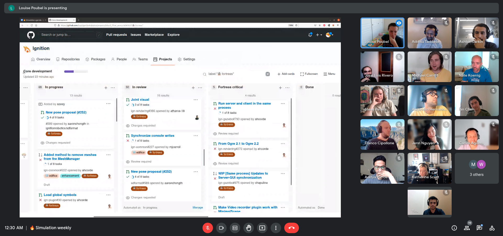
The non-programming part was just as much of an experience, if not more. The weekly team meetings were a great way of looking into project management and workflows. It was definitely worth staying up late at 1 AM in the night, working with people based in different timezones. Now, I am looking forward to giving my project presentation at the Ignition Fortress Demos Community Meeting.
The work has helped me improve my programming skills, and I learned a great deal about 3D rendering and physics simulation.
About Me
I am a final-year undergraduate engineering student at DJ Sanghvi College of Engineering, University of Mumbai pursuing Electronics Engineering.
I primarily work with autonomous robotics and self-driving software. I have been a part of the Formula Student team of my institute where we are building a self-developed autonomous race car. Through the team, I gained hands-on experience in robot navigation and perception and motivated me to further explore ROS and Gazebo. I have also worked at a startup to develop and deploy autonomous navigation software for use in warehouse environments.
During my time at Open Robotics, I had the opportunity to directly work on features that were being used by people in the robotics industry and academia.
Thank you for reading.